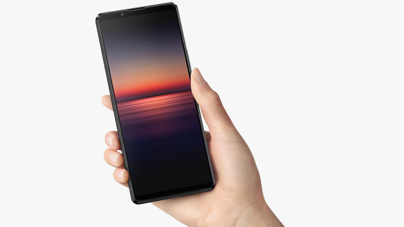
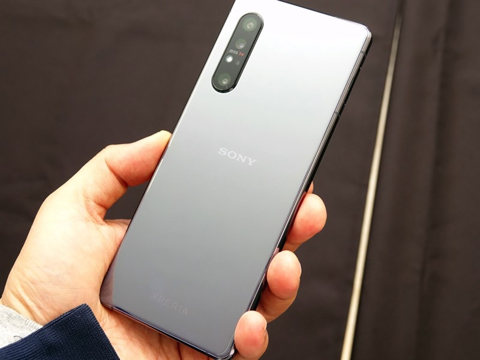
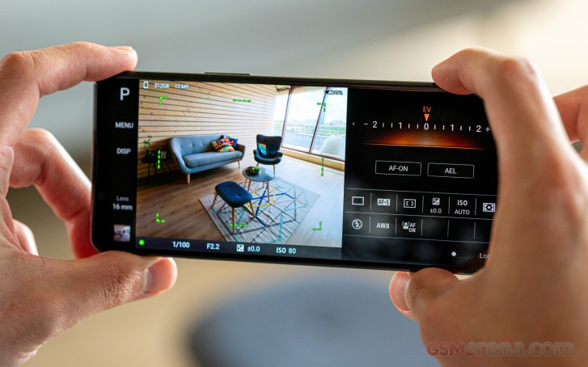
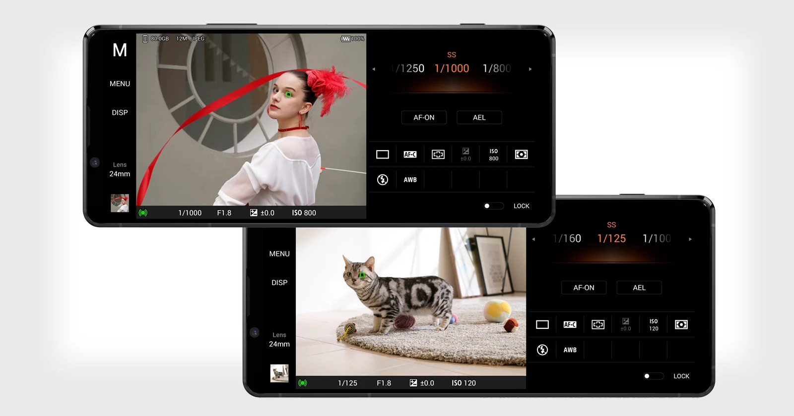
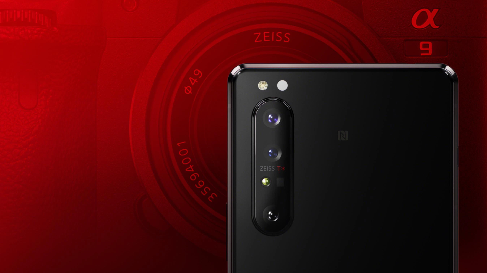
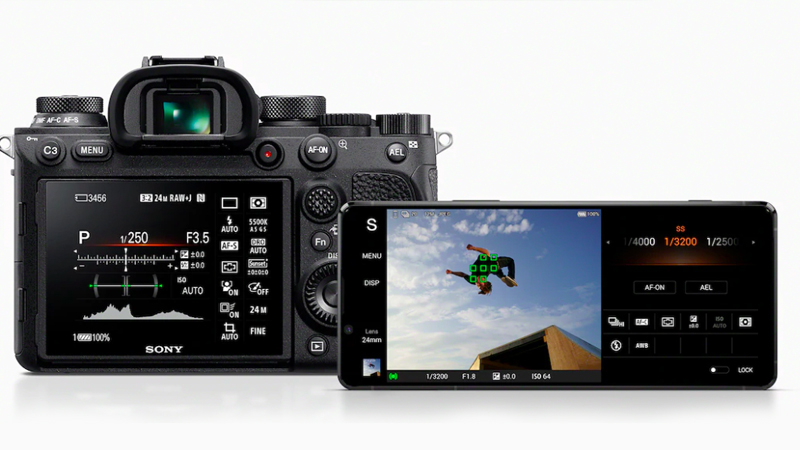
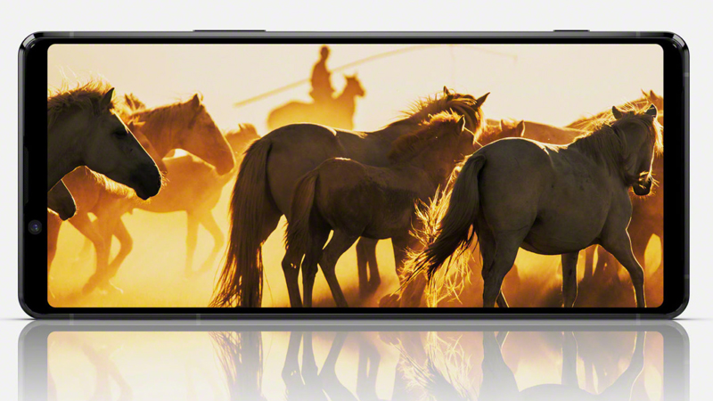
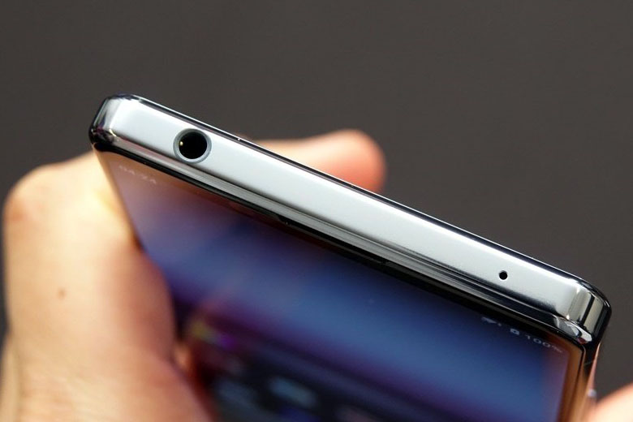

Nhà sản xuất Nhật Bản đã chính thức tung ra Sony Xperia 1 II, flagship 2020 với những nâng cấp mạnh tay về công nghệ camera, kết nối 5G thế hệ mới. Liệu Xperia 1 II có giúp Sony giành lại vị thế trong cuộc chiến flagship năm nay (2020)?
Thiết kế OmniBalance truyền thống của dòng Sony Xperia
Không đi theo xu hướng điện thoại tràn viền, Sony vẫn giữ được chất riêng với thiết kế OmniBalance quen thuộc trên các dòng máy Xperia trước đây.
Máy được hoàn thiện từ mặt lưng bằng kính, hình chữ nhật vuông vức với các cạnh viền thẳng nam tính mạnh mẽ. Về cơ bản, Xperia 1 II vẫn thừa hưởng nhiều nét đặc trưng từ Xperia 1 hay những đời Xperia Z trước đó.

Mặt trước của Xperia 1 II có hai viền màn hình trên dưới đối xứng khá dày, chứa cặp loa stereo và camera
selfie. Mặt sau có hệ thống ba camera được xếp dọc nằm sát cạnh viền máy cùng với logo Sony được đặt
chính giữa quen thuộc.
Cảm biến vân tay của máy vẫn tiếp tục được giữ lại ở cạnh bên, tích hợp thẳng vào phím nguồn như truyền
thống.
Cụm 3 camera với nhiều nâng cấp đáng giá
Sony đã tập trung nâng cấp rất nhiều cho cụm camera trên Sony Xperia 1 II, nhắm hướng đến người dùng
chụp ảnh chuyên nghiệp với những tùy chỉnh mạnh mẽ.
Máy được trang bị cụm 3 camera cùng có độ phân giải 12 MP bao gồm camera góc rộng, góc cực rộng và ống
kính tele với công nghệ chống rung quang học OIS cho bức ảnh rõ nét hơn, hạn chế nhòe hình do rung lắc.
Bên cạnh đó, thiết bị mới nhất của Sony được trang bị thêm cảm biến ToF có phạm vi hoạt động tới 5 mét, hỗ trợ tính toán chiều sâu, kích thước các đối tượng phức tạp, từ đó giúp ứng dụng thực tế ảo AR và hiệu ứng làm mờ khi chụp ảnh chính xác hơn.

Sony cho biết, hãng đã trang bị cảm biến lớn hơn nhiều cho cụm camera chính, điều này sẽ giúp Xperia 1
II thu sáng tốt hơn trong môi trường ánh sáng yếu.
Riêng 2 camera có tiêu cự 16 mm và 24 mm được trang bị thêm cảm biến Dual Photo Diode (Dual-PD) có tác
dụng giảm nhiễu hạt khi chụp màu sắc rực giúp giữ lại chi tiết tốt nhất.
Camera Xperia 1 II, còn hỗ trợ công nghệ lấy nét theo thời gian thực AF Real-time và Eye AF (AutoFocus) giúp theo dõi di chuyển con người hay động vật, giúp bạn có thể chụp những cảnh chuyển động một cách sắc nét nhất.
Camera của máy còn được trang bị ống kính Zeiss cao cấp, phủ một lớp Zeiss T* để giảm hiện tượng hắt sáng và cho độ tương phản tốt hơn.
Mặt trước của chiếc điện thoại được trang bị camera 8 MP phục vụ selfie và gọi video.
Kết hợp hoàn hảo với dòng máy ảnh Alpha của Sony
Việc ghép nối giữa Sony Xperia 1 II với các dòng máy ảnh Alpha sẽ trở nên dễ dàng hơn rất nhiều, bạn có thể dùng màn hình của điện thoại làm kính ngắm, hay để điều khiển máy ảnh từ xa chỉ qua vài thao tác kết nối đơn giản.

Nhờ tích hợp công nghệ độc quyền từ dòng máy ảnh Sony Alpha, Xperia 1 II có thể đạt tốc độ chụp liên tục
tới 20 lần trong một giây, nhanh nhất trong thế giới smartphone hiện tại.
Khi quay video, camera của Xperia 1 ll có hỗ trợ quay video HDR. Tuy không có hỗ trợ quay video 8K như
trên các mẫu điện thoại Samsung Galaxy S20, nhưng bạn có thể quay video 4K với tỷ lệ khung hình 21:9 ở
24 đến 30 FPS thông qua ứng dụng Cinematography Pro.
Màn hình hiển thị xuất xắc
Sony Xperia 1 II trang bị màn hình kích thước lên đến 6.5 inch, nhưng với tỷ lệ 21:9 cùng viền màn hình trên dưới khá dài đã khiến cho Xperia 1 II là chiếc smartphone dài nhất hiện nay với chiều dài lên đến 165,1 mm.

Flagship mới của Sony vẫn trang bị màn hình có độ phân giải 4K (3840x1644), cùng tấm nền OLED HDR cho
chất lượng hình ảnh chi tiết, màu sắc rực rỡ với mọi góc nhìn.
Tần số quét trên Sony Xperia 1 II chỉ đạt 60Hz. Tuy nhiên, nhờ vào công nghệ giảm mờ chuyển động giúp
cảnh động được mượt mà hơn, Sony khẳng định trải nghiệm vẫn gần như tương đương với những màn hình có
tần số quét 90 Hz.
Cấu hình mạnh, jack cắm 3.5 mm, kháng nước IP68 và còn nhiều thứ khác
Sony đã trang bị cho mẫu điện thoại mới ra mắt của mình vi xử lý mạnh nhất của Qualcomm Snapdragon 865
cùng 8 GB RAM, vì thế Xperia 1 II có thể khởi động ứng dụng nhanh chóng, chiến mọi tựa game mượt mà ở độ
phân giải cao mà không gặp bất cứ trở ngại nào.
Dung lượng lưu trữ 256 GB, và còn hỗ trợ thêm khe cắm thẻ microSD, khá dư dả cho bạn lưu trữ hình, nhạc,
video với chất lượng cao
Xperia 1 II đạt tiêu chuẩn kháng bụi kháng nước IP68 giúp bảo vệ máy khỏi rủi ro khi vô tình dính nước.
Chiếc điện thoại pin trâu có dung lượng pin 4000 mAh có hỗ trợ sạc nhanh sẽ đảm bảo thời gian sử dụng
thoải mái trong vòng 1 ngày hoặc có thể qua ngày thứ 2 nếu bạn dùng tiết kiệm.
Điều đặc biệt là jack cắm tai nghe 3.5 mm cũng đã quay trở lại. Đây cũng là mẫu flagship duy nhất ở thời điểm hiện tại vẫn còn dùng giắc cắm tai nghe. Điều này cho phép Sony tập trung vào chất lượng âm thanh và trải nghiệm người dùng tốt hơn.
👍Thank you for reading!